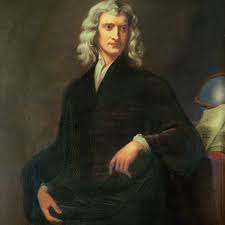

sir issac newton

english physicist,mathematician (1643-1727)
10 things you didn't know about sir issac newton:
- He was the first scientist who legitimately tried to find an explanation as to why every object that holds some weight, plummets only towards the ground.
- His first book Philosophiæ Naturalis Principia Mathematica (Mathematical Principles of Natural Philosophy) was published in 1687
- In this work, Newton stated the three universal laws of motion. Together, these laws describe the relationship between any object, the forces acting upon it and the resulting motion, laying the foundation for classical mechanics.
- Newton's Law of Motion stated:
- First Law: In an inertial frame of reference, an object either remains at rest or continues to move at a constant velocity, unless acted upon by a force.
- Second Law: In an inertial frame of reference, the vector sum of the forces F on an object is equal to the mass m of that object multiplied by the acceleration a of the object: F = ma.
- Third Law: When one body exerts a force on a second body, the second body simultaneously exerts a force equal in magnitude and opposite in direction on the first body.
- Newton also made seminal contributions to optics, and shares credit with Gottfried Wilhelm Leibniz for developing the infinitesimal calculus.
- Newton built the first practical reflecting telescope and developed a sophisticated theory of colour based on the observation that a prism separates white light into the colours of the visible spectrum. His work on light was collected in his highly influential book Opticks, published in 1704.
- In addition to his work on calculus, as a mathematician Newton contributed to the study of power series, generalised the binomial theorem to non-integer exponents, developed a method for approximating the roots of a function, and classified most of the cubic plane curves.
- Beyond his work on the mathematical sciences, Newton dedicated much of his time to the study of alchemy and biblical chronology, but most of his work in those areas remained unpublished until long after his death.
- In 1704, Newton published Opticks, in which he expounded his corpuscular theory of light.
- Newton died in his sleep in London on 20 March 1727.
"My powers are ordinary. Only my application brings me success."
--Issac Newton
to know more about issac newton go to-->
Wikipedia